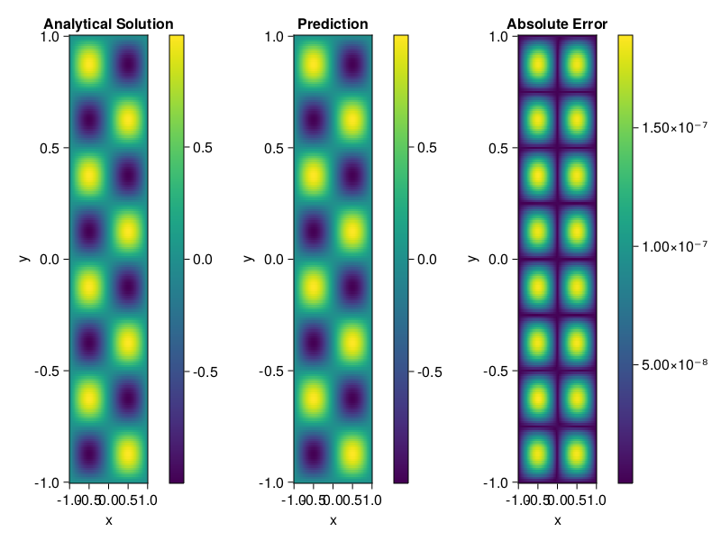

Helmholtz equation
Let us consider the Helmholtz equation in two space dimensions
\[\begin{aligned} &\Delta u(x, y)+k^{2} u(x, y)=q(x, y), \quad(x, y) \in \Omega:=(-1,1)^2 \\ &u(x, y)=0, \quad(x, y) \in \partial \Omega \end{aligned}\]
where
\[q(x, y)=-\left(a_{1} \pi\right)^{2} \sin \left(a_{1} \pi x\right) \sin \left(a_{2} \pi y\right)-\left(a_{2} \pi\right)^{2} \sin \left(a_{1} \pi x\right) \sin \left(a_{2} \pi y\right)+k^{2} \sin \left(a_{1} \pi x\right) \sin \left(a_{2} \pi y\right).\]
The excat solution is $u(x,y)=\sin{a_1\pi x}\sin{a_2\pi y}$. We chose $k=1, a_1 = 1$ and $a_2 = 4$.
using ModelingToolkit, IntervalSets, Sophon, Lux
using Optimization, OptimizationOptimJL
@parameters x,y
@variables u(..)
Dxx = Differential(x)^2
Dyy = Differential(y)^2
a1 = 1
a2 = 4
k = 1
q(x,y) = -(a1*π)^2 * sin(a1*π*x) * sin(a2*π*y) - (a2*π)^2 * sin(a1*π*x) * sin(a2*π*y) + k^2 * sin(a1*π*x) * sin(a2*π*y)
eq = Dxx(u(x,y)) + Dyy(u(x,y)) + k^2 * u(x,y) ~ q(x,y)
domains = [x ∈ Interval(-1,1), y ∈ Interval(-1,1)]
bcs = [u(-1,y) ~ 0, u(1,y) ~ 0, u(x, -1) ~ 0, u(x, 1) ~ 0]
@named helmholtz = PDESystem(eq, bcs, domains, [x,y], [u(x,y)])\[ \begin{align} \frac{\mathrm{d}}{\mathrm{d}y} \frac{\mathrm{d}}{\mathrm{d}y} u\left( x, y \right) + \frac{\mathrm{d}}{\mathrm{d}x} \frac{\mathrm{d}}{\mathrm{d}x} u\left( x, y \right) + u\left( x, y \right) =& - 166.78 \sin\left( 3.1416 x \right) \sin\left( 12.566 y \right) \end{align} \]
Note that the boundary conditions are compatible with periocity, which allows us to apply BACON.
chain = BACON(2, 1, 5, 2; hidden_dims = 32, num_layers=5)
pinn = PINN(chain) # call `gpu` on it if you want to use gpu
sampler = QuasiRandomSampler(300, 100)
strategy = NonAdaptiveTraining()
prob = Sophon.discretize(helmholtz, pinn, sampler, strategy)
@time res = Optimization.solve(prob, BFGS(); maxiters=1000)u: ComponentVector{Float64}(filters = (filter_1 = (bias = [-0.43276797054083477; 0.7350721920323902; … ; 0.930522479554306; -0.06280442382158408;;]), filter_2 = (bias = [0.3858707738313379; -0.593586913141743; … ; 0.7983521028125041; 0.4313728741950617;;]), filter_3 = (bias = [-1.0498869361861565; -0.589754695579495; … ; 0.19390080908655988; -0.7487628405570399;;]), filter_4 = (bias = [-0.32854465474437194; 0.05450871236783026; … ; 0.10409224535611661; 0.43723478399106935;;]), filter_5 = (bias = [-0.7012399403876892; -0.4305042729011213; … ; -0.5280909255264489; 0.1355836716428674;;])), linear_layers = (layer_1 = (weight = [0.09767209729750942 -0.38928438478118155 … 0.16356069365495723 0.29222103360467605; 0.12633739022229365 0.24066318930660108 … -0.016021032428954043 -0.20948582192528248; … ; -0.19718079536836103 -0.29124505266581874 … 0.05998469294208729 -0.3027111044503026; 0.157281527266184 0.15836241092415565 … -0.13135159328329785 0.10319892135531934], bias = [-0.03018335848651685; -0.023335813030325163; … ; -0.007179380561477187; -0.019460488043277793;;]), layer_2 = (weight = [0.21957582886326837 -0.17566887329294506 … 0.32446985436530223 0.3711404574942929; 0.16481900996314855 0.11050678084993233 … -0.22410513939484122 0.26327072409659663; … ; 0.22120868504366925 0.1247348410220722 … 0.18931689354613407 0.07744963386909084; -0.13256288553394552 -0.3311352601865955 … 0.18570650839228847 0.0989601082384261], bias = [-0.019966467912720897; 0.06683272376323712; … ; -0.03162427313563139; -0.05159897076308094;;]), layer_3 = (weight = [0.054736710694856985 -0.4007955146054529 … 0.22899866354116852 0.4135388606491709; 0.09240720423589295 0.3521238211927529 … 0.2759810448037422 -0.14624355122035573; … ; -0.384711325725585 -0.13118193127776287 … 0.26158098525128376 0.025754790482164374; -0.021263473821993978 0.08235293385165088 … -0.3597862253799299 -0.363509618479047], bias = [-0.02804875551761662; 0.03444117939565399; … ; -0.006284182634013485; 0.021331475287241275;;]), layer_4 = (weight = [0.22778594225629936 -0.28757787160171794 … 0.14390987329654162 0.02484119919421859; -0.00874243372032649 -0.2346367250541546 … -0.08748263587552702 0.22207636965466915; … ; 0.3590444007312728 0.10761187934081098 … -0.4068267735386081 0.13026173233445573; -0.26890272428874845 0.051694474271703615 … 0.17384859028052113 0.21064547637318776], bias = [0.007643752010534515; -0.002180312669049728; … ; -0.001258172582621234; -0.002360398316702984;;])), output_layer = (weight = [0.032514270320858844 0.053535011392845944 … -0.012349995419032238 -0.31435149774935045], bias = [-0.11514069245793013;;]))Let's plot the result.
phi = pinn.phi
xs, ys= [infimum(d.domain):0.01:supremum(d.domain) for d in domains]
u_analytic(x,y) = sinpi(a1*x)*sinpi(a2*y)
u_real = [u_analytic(x,y) for x in xs, y in ys]
phi_cpu = cpu(phi) # in case you are using GPU
ps_cpu = cpu(res.u)
u_pred = [sum(phi_cpu(([x,y]), ps_cpu)) for x in xs, y in ys]
using CairoMakie
axis = (xlabel="x", ylabel="y", title="Analytical Solution")
fig, ax1, hm1 = heatmap(xs, ys, u_real, axis=axis)
Colorbar(fig[:, end+1], hm1)
ax2, hm2= heatmap(fig[1, end+1], xs, ys, u_pred, axis= merge(axis, (;title = "Prediction")))
Colorbar(fig[:, end+1], hm2)
ax3, hm3 = heatmap(fig[1, end+1], xs, ys, abs.(u_pred-u_real), axis= merge(axis, (;title = "Absolute Error")))
Colorbar(fig[:, end+1], hm3)
fig